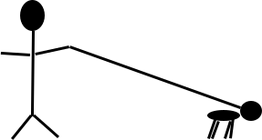

-Krajšanje krempljev -Krajšanje dlake med blazinicami -Odstranjevanje dlake iz ušesnega kanala -Kopanje in sušenje -Čiščenje obočesne dlake -Osnovno razčesavanje in razvozlavanje -Striženje (strojno in/ali s škarjami) -Trimanje -Odstranjevanje odpadajoče dlake -Odstranjevanje poddlanke -Čiščenje ušes in zob -Kontrola paraanalnih žlezGlede na želje stranke, kužka lahko uredimo na različne načine.
Redna nega zajema iste storitve in vam pripada, če svojega kosmatinca k nam pripeljete v 6 tednih po zadnji opravljeni negi.
V našem salonu nego izvajamo tudi na mačkah, ki so nege vajene. Nega vključuje razčesavanje, kopanje, sušenje ter krajšanje dlake na mestih, kjer je to potrebno.